The cas driver#
This page sets up the cas driver, which signs a user in against a CAS server, CAS 2.0 against Academica by default, with no per-app Entra registration. Start with the config below, then read the behavior notes for the options you plan to change.

The duplicator traces the cas key from the front page: five notches, one per sign-in step, and logout at the tip. The cut is the sign-in; the lock is still yours. With reduced motion on, you get the finished key.
Configure the driver#
The cas driver logs in against a CAS server, CAS 2.0 by default. The base URL is required config with no default, and it must include the path the CAS server lives under. For Academica, which serves CAS under /cas, it is https://academica.aws.wayne.edu/cas. People still see the familiar login.wayne.edu screen: Academica's /cas/login sends the browser there to sign in and back with a ticket, and SESAME checks the ticket against Academica.
<?php
declare(strict_types=1);
use Nyholm\Psr7\Factory\Psr17Factory;
use Waynestate\Sesame\Config;
use Waynestate\Sesame\DriverFactory;
use Waynestate\Sesame\Session\NativeSession;
$config = Config::fromArray([
'driver' => 'cas',
'environment' => 'production',
'cas' => [
'base_url' => 'https://academica.aws.wayne.edu/cas',
'service_url' => 'https://app.apps.wayne.edu/login',
],
]);
// Any PSR-18 client works, for example Guzzle. Set a timeout: Guzzle has no
// total timeout by default, so a hung CAS server would hold the request open
// forever. Turn redirects off for the validation call (Guzzle follows up to
// five by default, to any host or to plain http) and leave TLS verification
// on (`verify` is true by default; never set it to false). PSR-18 has no
// standard option for either, so the client you hand SESAME must carry them.
// SESAME treats any non-200 answer (including a redirect) as a failed login,
// and a client exception (a timeout, no route) as ProviderUnavailable, so a
// client that is set up wrong fails the sign-in and never signs anyone in.
$http = new \GuzzleHttp\Client([
'timeout' => 10,
'connect_timeout' => 5,
'allow_redirects' => false,
'verify' => true,
]);
// The app's session, seen through the port. The cas driver keeps its
// pending-login marker there (see "Binding the sign-in to the browser" below).
$session = new NativeSession();
$driver = DriverFactory::make($config, $http, new Psr17Factory(), null, null, null, $session);
Then build the Sesame facade with the driver and the same session, as in the Raw PHP section of the README.
Config keys#
| Key | Required | Default | Meaning |
|---|---|---|---|
cas.base_url |
Yes | none | The CAS server, an absolute https:// URL, including the path the CAS server lives under (for Academica, /cas). |
cas.service_url |
Yes | none | Where the server sends the user back to. |
cas.protocol |
No | 2.0 |
3.0 or 2.0. |
cas.renew |
No | false |
Send renew on login and validation, so the CAS server requires a fresh, direct login. |
cas.assume_mfa |
No | false |
A successful validation counts as an MFA sign-in: the identity's amr includes mfa. On only when the CAS server enforces MFA for every sign-in. |
cas.require_pending_login |
No | true |
Bind each sign-in to the browser that started it (blocks login CSRF). Off only for an app that must accept a ticket for a login it did not start, a link from the CAS login page. |
The service URL is the configured value only: the driver never reads the request's Host or X-Forwarded-* headers to build it.
Protocol#
Protocol 2.0 is the default because Academica is believed to redirect cookieless /p3/serviceValidate calls to the login page. Set cas.protocol to 3.0 when a CAS server releases attributes on /p3/serviceValidate.
Renew#
Set cas.renew to true when the app needs a fresh, direct login rather than an existing SSO session. The driver then sends renew on the login redirect and on the validation request, and the CAS server refuses a ticket that came from an SSO session with INVALID_TICKET. Leave it off against Academica: it does not issue a ticket for renew=true and sends the user back to the login page, so a renew login loops instead of signing in.
Sign-in time#
The sign-in time on the identity comes from the CAS authenticationDate attribute when the server sends one. When it is missing, unparseable, or more than five minutes ahead of the driver's clock, the driver uses its own clock instead, so a bad value can never push the sign-in time into the future.
With cas.protocol set to 3.0, a server may also release isFromNewLogin and longTermAuthenticationRequestTokenUsed. The identity reads them as $identity->isFromNewLogin() and $identity->usedLongTermToken(): true or false when the server said so (any letter case), and null when the attribute is missing or is anything but true or false. SESAME never guesses, so an app that wants a fresh login for a sensitive action can check isFromNewLogin() === true and send the user back through cas.renew when it is anything else.
MFA#
cas.assume_mfa is off by default, and it should stay off unless the CAS server enforces MFA for every sign-in. A successful CAS validation then means MFA happened for the user's current SSO session, and the driver says so on the identity: its amr includes mfa. Ask your CAS server's owner before turning it on; a server that enforces MFA only sometimes, or only for some users, would make the MFA check pass for sign-ins that never did MFA.
The MFA age still needs a sign-in time, and the driver never invents one: it comes from the CAS authenticationDate attribute, and when the server does not send one, the MFA check fails because there is no sign-in time to age.
Binding the sign-in to the browser#
With cas.require_pending_login on (the default), the driver stores a marker in the app's session before it sends the browser to CAS, and a returning ticket is accepted only against a live marker. The marker is single use and lives ten minutes, and the session keeps at most five of them, one per open sign-in tab, newest kept. A ticket with no live marker is refused before any HTTP call to the CAS server, which blocks login CSRF: an attacker who signs in through CAS for their own account cannot make a victim's browser deliver the attacker's ticket, because the victim's session holds no marker.
The driver needs the app's session for the marker, so pass it to DriverFactory::make() as the seventh argument (the example above passes a NativeSession). Set cas.require_pending_login to false only for an app that must accept a ticket for a login it did not start, for example a link from the CAS login page itself; that reopens login CSRF, so keep such an opt-out deliberate.
When CAS is down#
The ticket check is one HTTP call to the CAS server. When that call cannot be made (no route, DNS, TLS), runs past the client's timeout (10 seconds in the example above), or gets a 5xx answer, the driver throws Waynestate\Sesame\Exception\ProviderUnavailable with the reason code cas.unavailable. It is a subclass of AuthenticationFailed, so code that already catches AuthenticationFailed keeps working, and nobody is signed in either way. Catch it first to tell the visitor to try again rather than that the sign-in was refused:
use Waynestate\Sesame\Exception\AuthenticationFailed;
use Waynestate\Sesame\Exception\ProviderUnavailable;
try {
$user = sesame_login();
} catch (ProviderUnavailable $e) {
error_log('Sign-in: ' . $e->getMessage());
http_response_code(503);
header('Retry-After: 60');
echo 'The university sign-in is not answering. Try again in a minute.';
exit;
} catch (AuthenticationFailed $e) {
error_log('Sign-in: ' . $e->getMessage());
http_response_code(403);
echo 'The sign-in did not go through. Open the app again to retry.';
exit;
}
The HTTP client's own exception is never chained: it holds the validation URL, and the URL holds the ticket. A 4xx answer is still a plain AuthenticationFailed (the server refused the call). Before 0.7.1 the client's exception (for Guzzle, a ConnectException) escaped sesame_login() as it was, so an app that caught only AuthenticationFailed showed a blank 500 while CAS was down. The oauth2, oidc and saml drivers use the same class when their provider cannot be reached (oauth2.introspection_unavailable, oidc.discovery_unavailable, oidc.token_exchange, saml.metadata, and jwks_unavailable for a key set). Laravel apps can render it from the exception handler the same way.